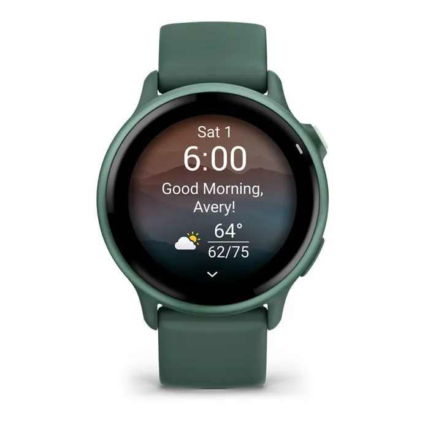

Rp 7.010.000
Smartwatch olahraga premium dengan fitur GPS lengkap, sensor kesehatan terbaru, dan desain casing aluminium Jasper Green yang sangat modern.
| Model No. | 010-02985-42 |
|---|---|
| Case Size | 45 mm |
| Display | Amoled High Resolution |
| Band | Jasper Green Silicone |
| Battery Life | Up to 11 Days |
| Water Resistance | 5 ATM |
| Features | GPS, Heart Rate Monitor, SpO2, Stress Tracking, Sleep Monitoring, Sports Mode, Smart Notification |